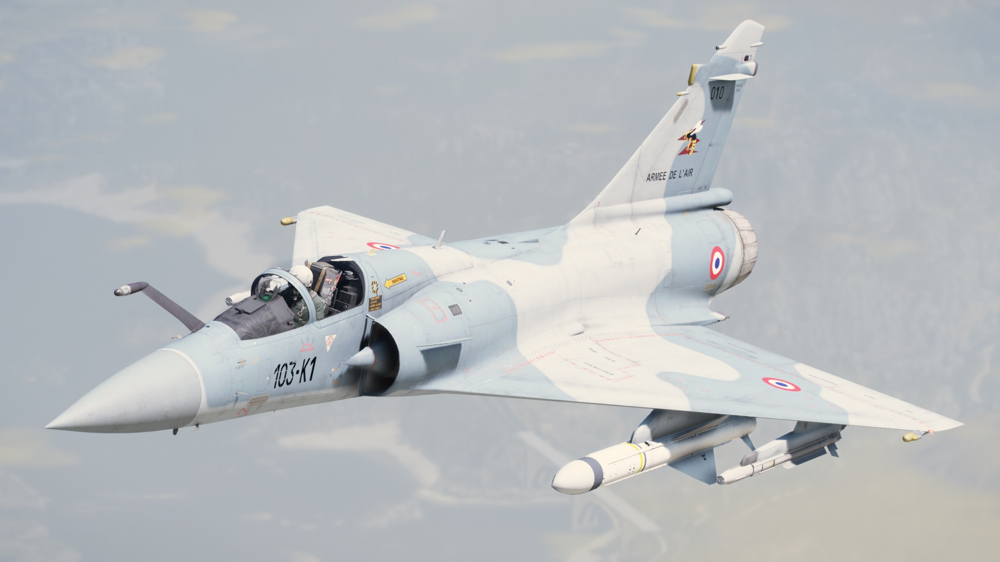
Dassault Mirage 2000
El Dassault Mirage 2000 es un caza a reacción de cuarta generación, polivalente y de un solo motor de la familia Mirage, fabricado por la compañía francesa Dassault Aviation. Fue diseñado a finales de la década de 1970, como un caza ligero basado en el Mirage III, para el Ejército del Aire Francés
Velocidad máxima: 2.336 km/h // Alcance: 1.550 km // Peso: 7.500 kg // Tipos de motores: Turbofán, Snecma M53
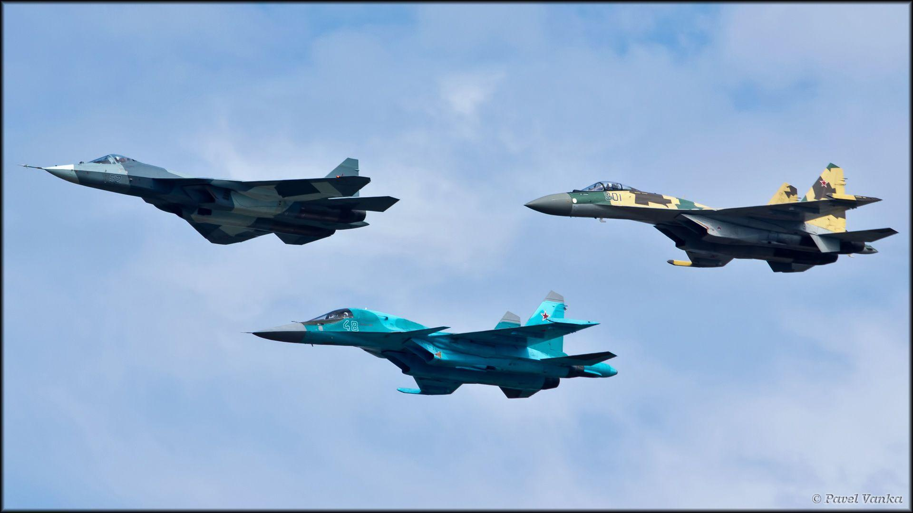
Sukhoi Su-57, Su-34 y Su-35
Aviones rusos de Sukhoi: el Su-57 es un caza de quinta generación; el Su-34, un cazabombardero biplaza; y el Su-35, un caza polivalente.

AGM-114
El AGM-114 Hellfire es un misil aire-tierra estadounidense diseñado para destruir carros de combate desde helicópteros o aviones, las primeras tres generaciones del misil Hellfire eran guiadas por láser y la cuarta generación utiliza un buscador de frecuencia de radar.
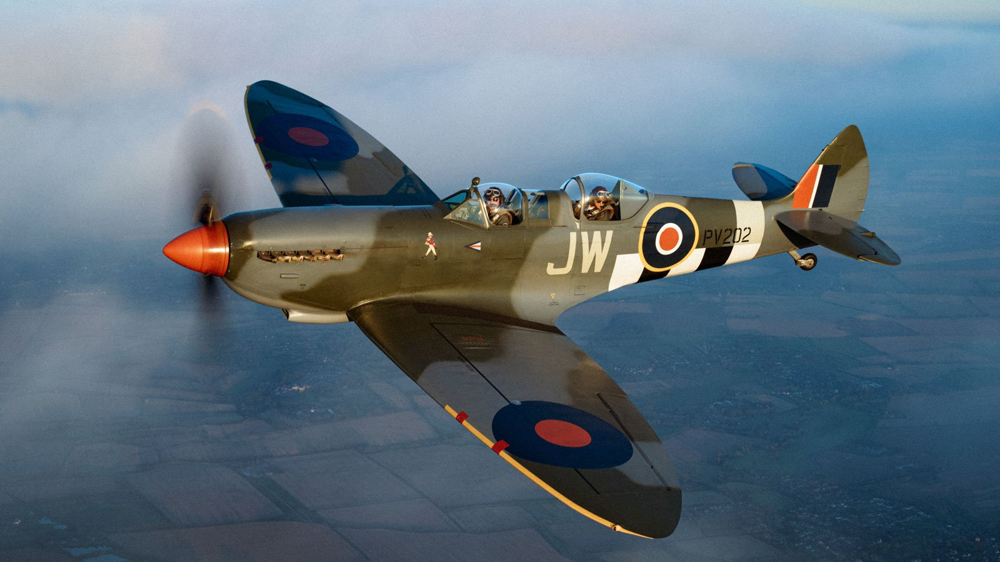
Supermarine Spitfire
El Supermarine Spitfire fue un caza monoplaza británico usado por la Royal Air Force y muchos otros países Aliados durante la Segunda Guerra Mundial. El Spitfire continuó siendo usado hasta los años 1950, tanto como caza de primera línea como en funciones secundarias .
Tipos de motores: Rolls-Royce Merlin, Rolls-Royce Griffon // Velocidad máxima: 594 km/h// Alcance: 680 km // Envergadura: 11 m
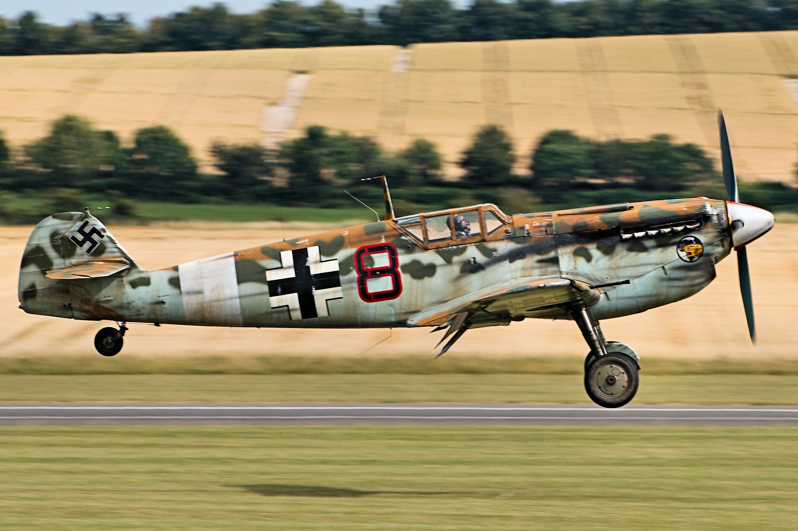
Messerschmitt Bf 109
El Messerschmitt Bf 109 fue un avión de caza alemán de la Segunda Guerra Mundial, diseñado por un equipo al mando de Wilhelm Willy Emil Messerschmitt a principios de los años 30, cuando era diseñador jefe de la Bayerische Flugzeugwerke
Tipo de motor: Motor V12 // Longitud: 9,02 m// Peso: 2.700 kg // La velocidad máxima era de 570 km/h // techo de vuelo 11 000 m
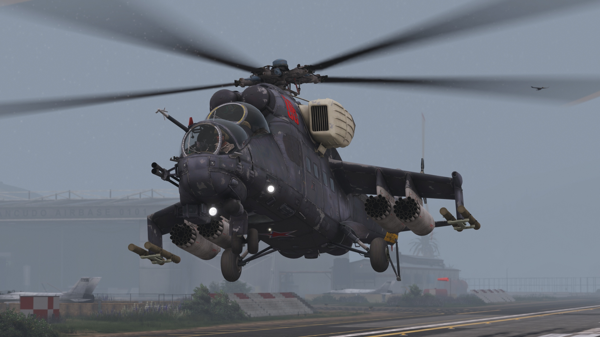
Mil Mi-24
El Mil Mi-24 es un helicóptero artillado y helicóptero de ataque de gran tamaño y con capacidad limitada para transporte de tropas producido por la Fábrica de helicópteros Mil de Moscú desde comienzos de los años 1970.
Velocidad máxima: 335 km/h // Tipo de motor: Turboeje // Alcance: 450 km // Peso: 8.500 kg
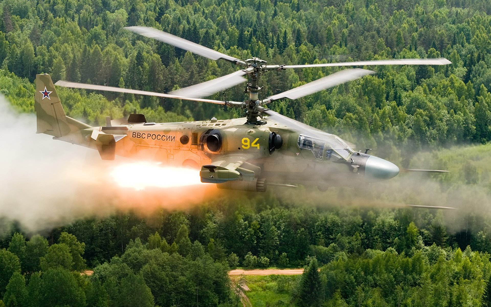
Kamov Ka-52
El Kamov Ka-52 «Alligator» es un helicóptero de ataque biplaza todo tiempo de fabricación rusa que cuenta con el distintivo sistema de rotor coaxial del departamento de diseño de Kamov. Se trata de un desarrollo del monoplaza Kamov Ka-50 al que se le ha ampliado la sección delantera para albergar al copiloto.
Velocidad de crucero: 260 km/h // Tipo de motor: Klimov VK-2500 //Alcance: 460 km // Peso: 7.700 kg
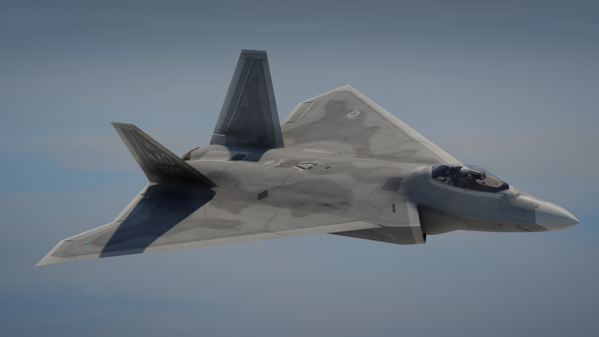
Lockheed Martin FB-22 Strike Raptor
Propuesta de bombardero furtivo derivado del F-22 Raptor, concebida para ampliar su alcance y carga de ataque a tierra. La imagen es una recreación digital del concepto.
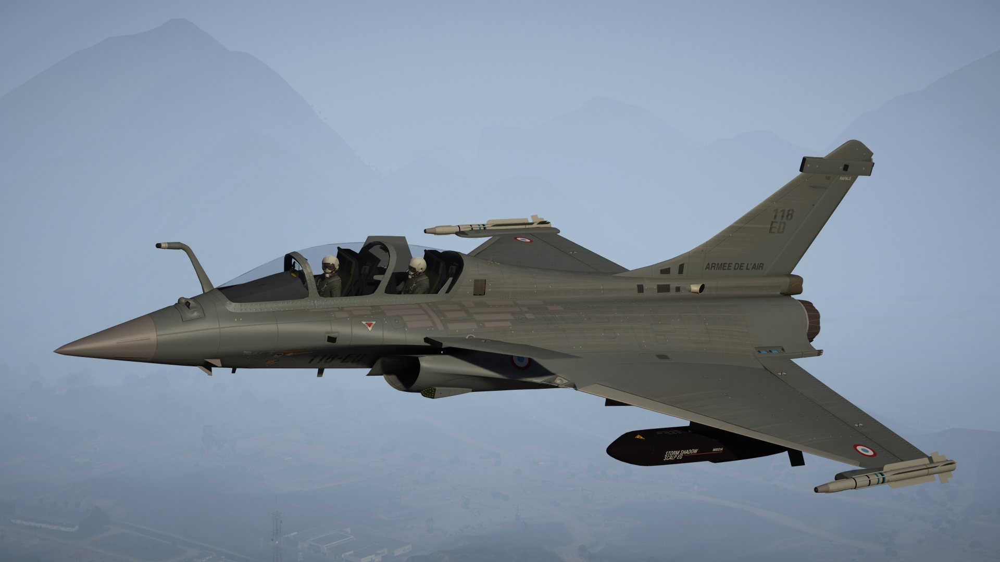
Dassault Rafale
Caza polivalente // Tipos de motores: Turbofán, Snecma M88 // Velocidad máxima: 1.912 km/h// Alcance: 3.700 km
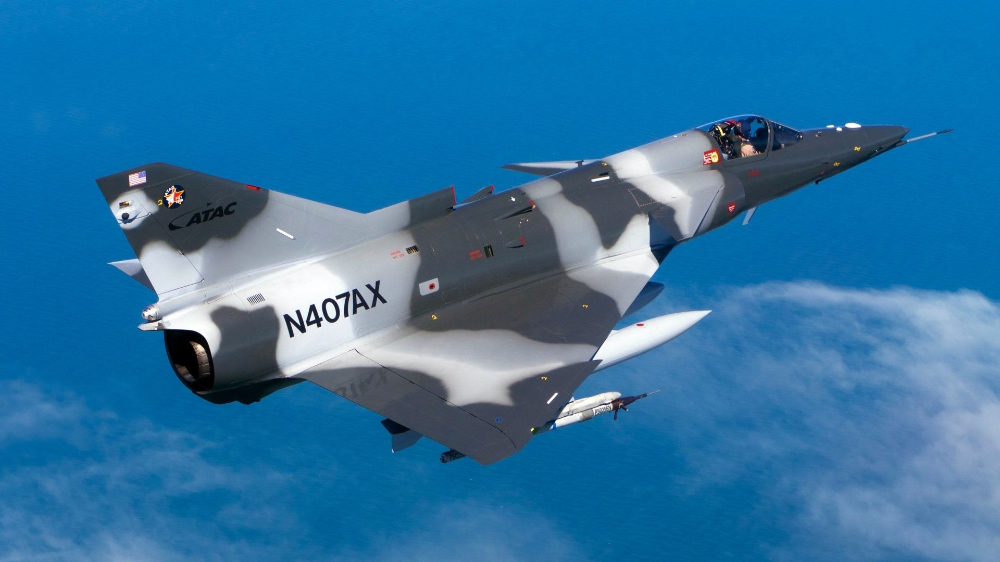
IAI KFIR
Caza polivalente desarrollado en Israel por IAI durante los años setenta. Se ha utilizado en misiones de combate y entrenamiento de pilotos adversarios.

Bomba GPB — Ace Combat 7
Bomba guiada representada en el videojuego Ace Combat 7 para atacar objetivos terrestres. La imagen muestra su modelo digital en el hangar del juego.
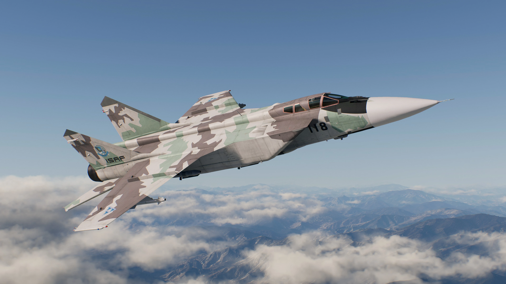
Mikoyan MiG-31
Interceptor supersónico biplaza desarrollado en la Unión Soviética para la defensa aérea. Entró en servicio en 1981.
Velocidad máxima: 3.000 km/h //Tipos de motores: Turbofán, Soloviev D-30 // Peso: 21.820 kg
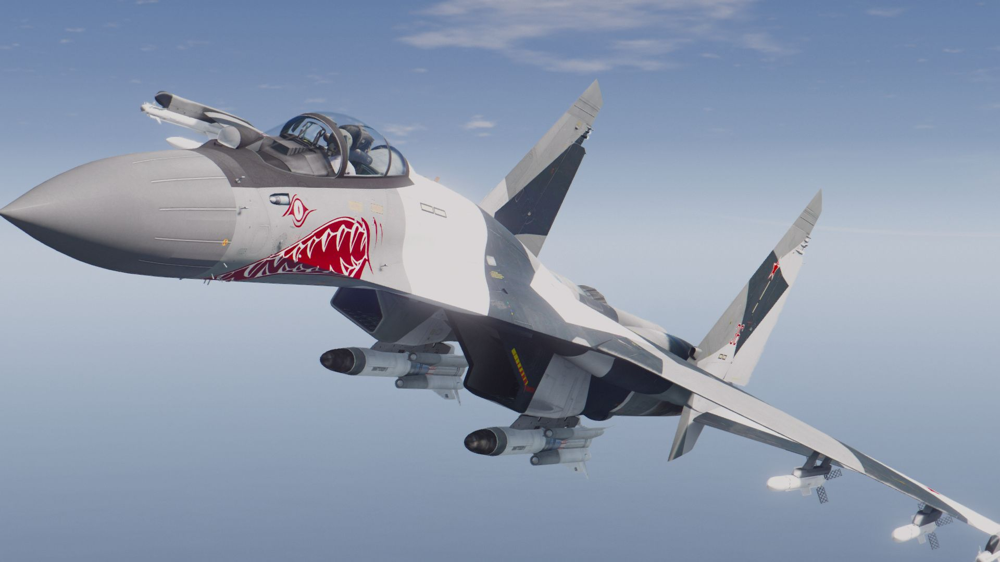
Sukhoi Su-35
Caza polivalente ruso derivado del Su-27, diseñado para misiones aire-aire y aire-superficie. La versión moderna realizó su primer vuelo en 2008.
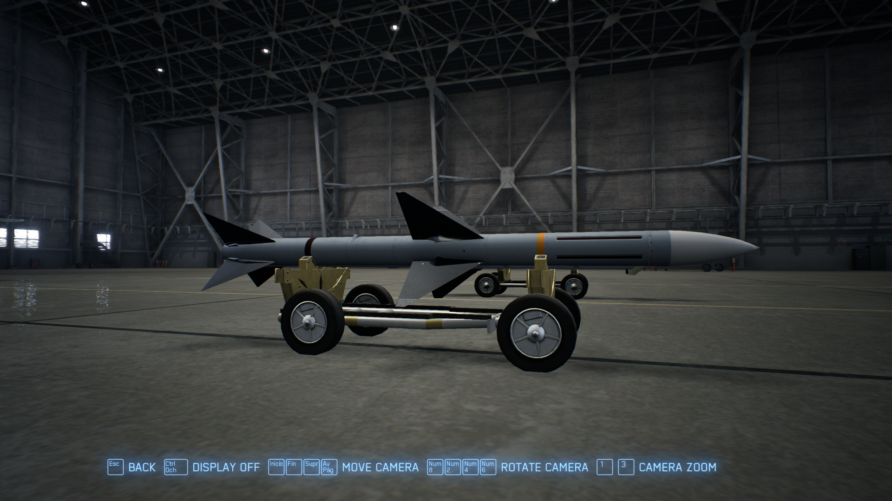
Misil HVAA — Ace Combat 7
Misil aire-aire de alta velocidad del videojuego Ace Combat 7. La imagen corresponde al modelo digital de este armamento especial.
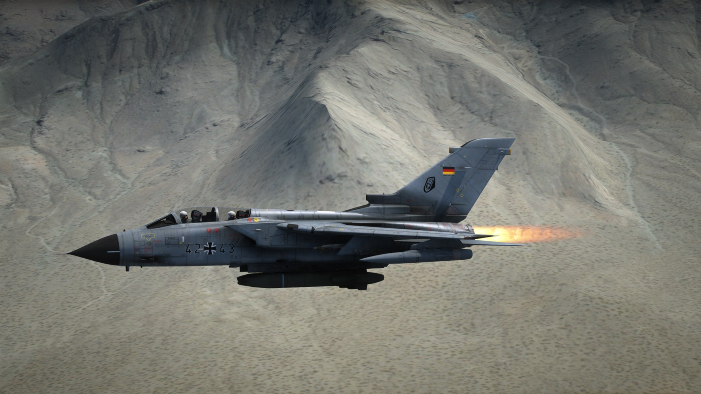
Panavia Tornado
El Panavia Tornado es un avión de combate bimotor con ala de geometría variable que fue desarrollado conjuntamente por Reino Unido, Alemania Occidental e Italia en los años 1970

F-16 Fighting Falcon
Caza polivalente monomotor desarrollado por General Dynamics para combate aéreo y ataque a tierra. El F-16A alcanzó su capacidad operativa inicial en la USAF en enero de 1979.
Presupuesto unitario: 14.600.000–18.800.000 USD (1998) // Alcance: 4.217 km // Fabricantes: Lockheed Martin, General Dynamics, Lockheed Corporation

Sukhoi Su-57
El Sukhoi Su-57 o Su-57 es un avión monoplaza con dos motores a reacción, de capacidad furtiva, multirrol y de quinta generación, desarrollado desde el 2002 para misiones de superioridad aérea y ataque por Sukhoi, parte de la Corporación de Aeronaves Unidas.
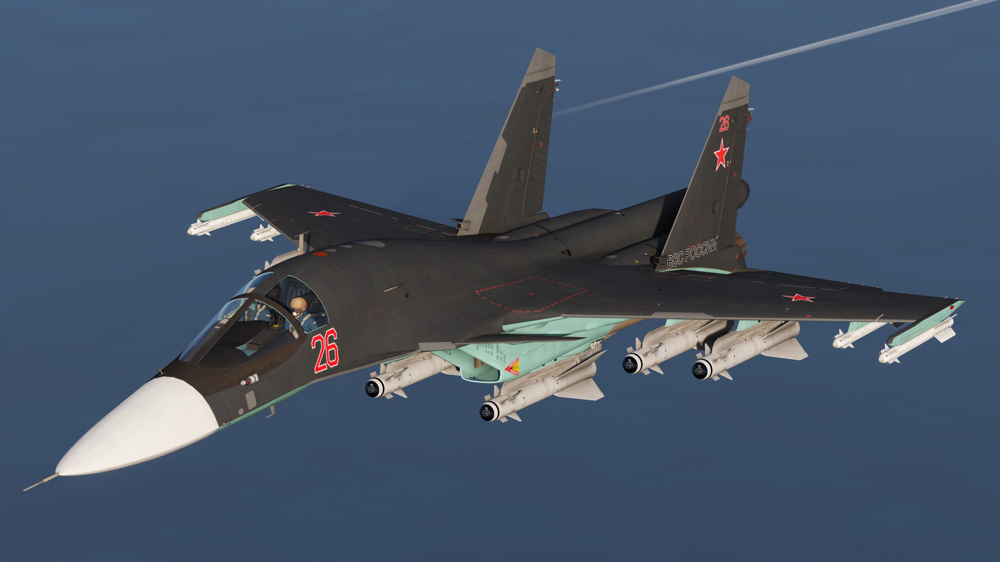
Sukhoi Su-34
Cazabombardero ruso biplaza diseñado para atacar objetivos terrestres y navales de día y de noche. Su cabina blindada protege a la tripulación.
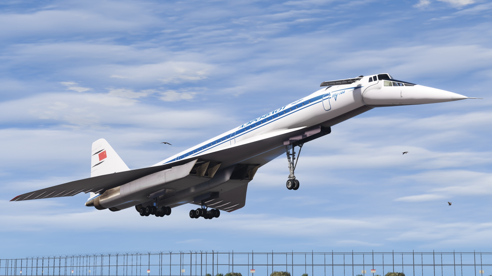
Tupolev Tu-144
Avión soviético de pasajeros diseñado para volar a velocidad supersónica. Su primer vuelo fue en 1968 y transportó pasajeros con Aeroflot entre 1977 y 1978.
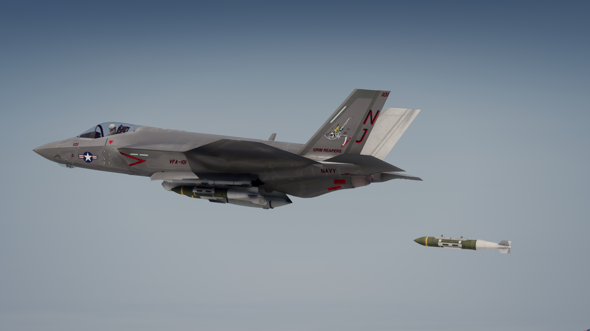
Lockheed Martin F-35 Lightning II
Caza furtivo polivalente de quinta generación. Combina sensores integrados y capacidad de compartir información para misiones de combate aéreo y ataque a tierra.
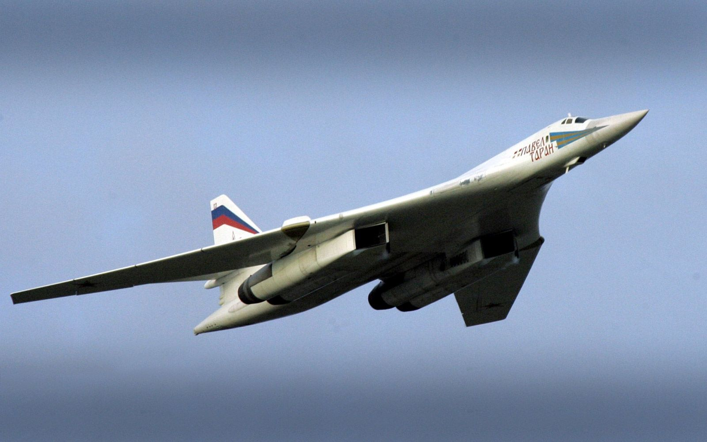
Túpolev Tu-160 «Cisne blanco»
Bombardero estratégico supersónico de origen soviético, con alas de geometría variable. Fue diseñado para transportar misiles de crucero de largo alcance.